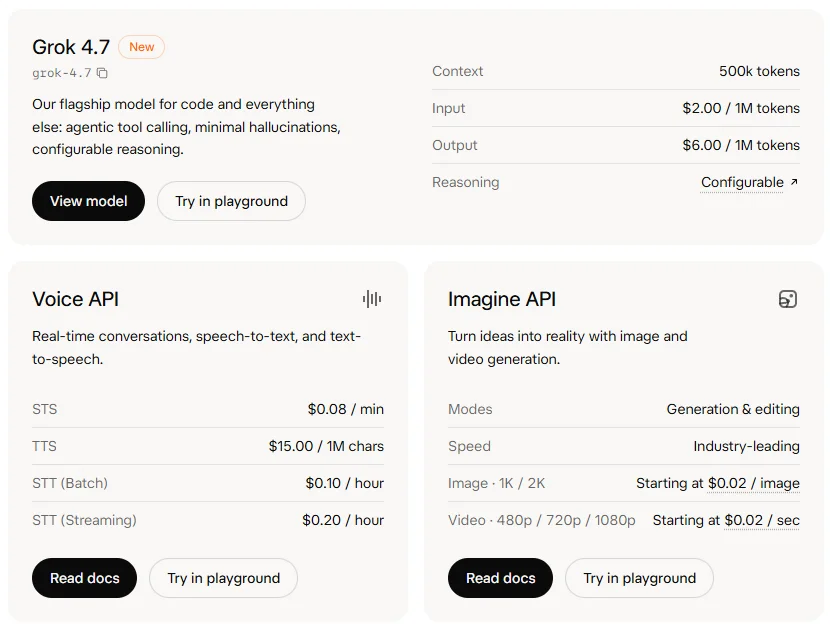

SpaceXAI（xAI）SpaceXAI LLC · SpaceX 旗下
并入 SpaceX 的 AI 部门：自建 Colossus 超算，旗舰 Grok 4.7 以输入 $2 / 输出 $6 的低价主打编程与知识工作；收购 Cursor 后，用 X Subscription 把 Grok、Cursor 和 X 打包。
一页结论
- 公司形态剧变：2026-02 被 SpaceX 全股票收购，7 月更名 SpaceXAI，对外品牌 SpaceX Super Intelligence；8 月完成对 Cursor 的收购S3
- 单一旗舰、低价策略：API 只主推 Grok 4.7（50 万上下文，$2 / $6），官方称速度为同类两倍、价格一半S1S2
- 算力既自用也出租：Colossus 数据中心客户包括 Anthropic、Google 等S3
- 订阅捆绑：X Subscription 让 Grok 应用、X 中的 Grok 与 Cursor 共享一个用量池S4
- 争议与诉讼多：深度伪造、Colossus 2 空气许可诉讼、承认部分蒸馏 OpenAI 模型、创始团队几乎全部离开S3
01公司介绍
02公司战略
SpaceXAI 的打法是“自建算力 + 低价旗舰 + 收购入口 + 订阅捆绑”。
- 算力为王：自建 Colossus，同时对外出租给其他模型厂商S3
- 低价旗舰：Grok 4.7 定价远低于同档竞品S1
- 买下开发者入口：600 亿美元收购 Cursor，Grok 模型成为 Cursor 默认选择S3
- 捆绑分发：X 的社交用户与 Cursor 的开发者共享一套订阅S4
03模型矩阵与定位
| 模型 / 接口 | 定位 | 价格 | 说明 |
|---|---|---|---|
| Grok 4.7 | 旗舰：编程与其他一切任务 | 输入 $2 / 输出 $6（每百万 token） | 50 万上下文，可配置推理；另有 2 倍速度、2 倍价格的快速版S1S2 |
| Grok Voice API | 实时对话、语音转文字、文字转语音 | STS $0.08 / 分钟；TTS $15 / 百万字符 | S1 |
| Grok Imagine API | 图像与视频生成 | 图像 $0.02 / 张起；视频 $0.02 / 秒起 | S1 |
| Grok Build | 编程模型（0.1 公测） | — | S5 |

04产品与 Agent 布局
应用层
Grok App 与 X 中的 GrokGrok Bot 办公 AgentGrok BuildCursor（编程）
开发者平台
Grok API（文本、语音、图像、视频）服务端网页搜索与 X 搜索工具
模型层
Grok 4.7 / 4.6 / 4.5Grok Imagine Image 2.0 / Video 1.5Grok Voice
算力层
Colossus 数据中心
渠道X SubscriptionX 平台Cursor第三方编程工具与模型路由
Grok Bot 与 Cursor 的详细分析见《编程与办公智能体》系列。
05开放权重
| 模型 | 说明 |
|---|---|
| Grok-1、Grok-2 | 较旧模型开放权重，Hugging Face 下载量有限S6 |
| Grok 4 系列 | 未开放 |
06商业模式
07上下游与渠道
上游：芯片与算力
自建 Colossus（GPU 集群与燃气轮机供电）S3
SpaceXAI
Grok 模型、Grok 应用、Cursor
渠道
算力客户
Anthropic、Google、Reflection AI 等S3
下游客户
X 用户与订阅者开发者与企业
08用户与收入
09开发者口碑
10安全合规
11近期动态
12潜在风险分析意见
| 风险 | 表现 | 可能程度 |
|---|---|---|
| 内容安全与监管 | 深度伪造等问题可能引发多国监管S3 | 高 |
| 人才流失 | 联合创始人几乎全部离开S3 | 中 |
| 亏损 | 2025 年经营亏损 64 亿美元S3 | 中 |
| 环保与许可 | Colossus 2 诉讼可能影响扩张S3 | 中 |
| 供应链反制 | OpenAI 对 Cursor 断供，类似反制可能扩大（分析意见） | 中 |
| 品牌 | 频繁更名与公开冲突影响企业客户信任（分析意见） | 中 |
“可能程度”为基于现有公开信息的判断，不是量化预测。
13综合结论分析意见
优势
- 自建超大算力
- X 与 Cursor 双入口
- 低价旗舰
劣势
- 内容安全争议
- 团队稳定性
机会
- 算力出租的第二收入
- 订阅捆绑的交叉转化
威胁
- 监管与诉讼
- 头部厂商的竞争与反制
对 AI 产品团队的启示
- 算力可以是产品：Colossus 既支撑自家模型，也直接对外出租创造收入。
- 收购入口是追赶的捷径：买下 Cursor，让 Grok 一步进入职业开发者的工作流。
- 低价是旗舰的另一种定位：单一旗舰、明显低价，降低客户选型成本。
- 信任短板难用功能弥补：内容安全和治理问题会直接影响企业采购。
信息缺口
以下信息未找到可靠的公开来源，本报告不做推测。
- Grok 的官方用户数
- 2026 年收入
- Colossus 当前的 GPU 规模（最新公开数字来自 2025 年底）
- Grok Build 的定价
来源
A 官方 · B 权威媒体或第三方 · C 社区（仅用于口碑与线索）。访问日期均为 2026-11-02。
- S1 · AModelsxAI 开发者文档
- S2 · AGrok 4.7SpaceXAI（x.ai） · 2026-09-21
- S3 · BxAI (company)（汇总路透社、CNBC、招股书等报道）Wikipedia
- S4 · AIntroducing The X SubscriptionSpaceXAI（x.ai） · 2026-10-12
- S5 · Ax.ai NewsSpaceXAI · 2026
- S6 · Axai-org on Hugging FaceHugging Face